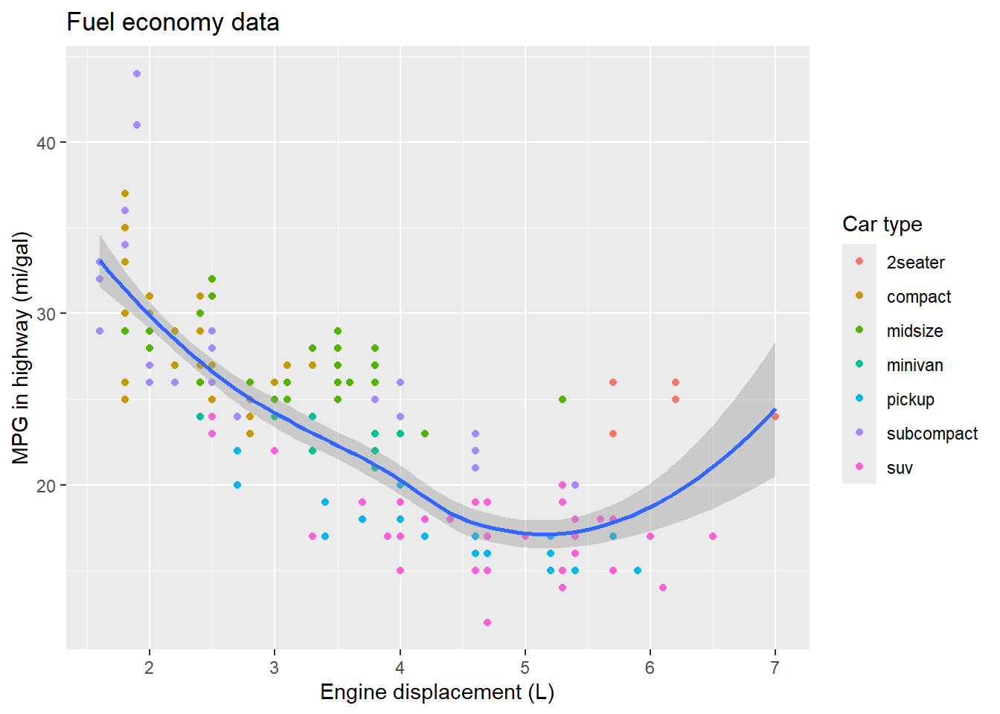
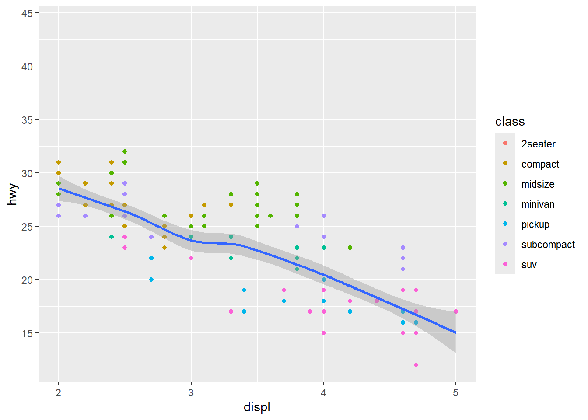
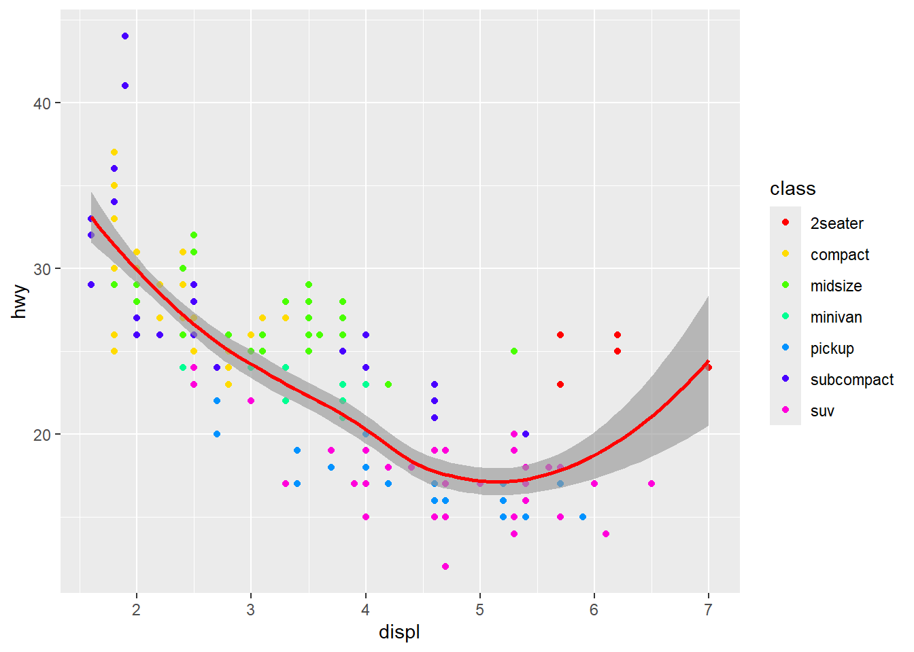

library(tidyverse) # or: library(ggplot2)ggplot2 Basic
1 Components
The work of visualization involves the process of mapping the data into visualized geometry. There are three basic components to this: data, geometry, and aesthetic mappings. In this article, we will step-by-step learn about these three components.
1.1 Data
The data structure in ggplot2 is organized in a data.frame or a similar structure like tibble. As an example, we will use the mpg dataset from ggplot2.
mpg# A tibble: 234 × 11
manufacturer model displ year cyl trans drv cty hwy fl class
<chr> <chr> <dbl> <int> <int> <chr> <chr> <int> <int> <chr> <chr>
1 audi a4 1.8 1999 4 auto… f 18 29 p comp…
2 audi a4 1.8 1999 4 manu… f 21 29 p comp…
3 audi a4 2 2008 4 manu… f 20 31 p comp…
4 audi a4 2 2008 4 auto… f 21 30 p comp…
5 audi a4 2.8 1999 6 auto… f 16 26 p comp…
6 audi a4 2.8 1999 6 manu… f 18 26 p comp…
7 audi a4 3.1 2008 6 auto… f 18 27 p comp…
8 audi a4 quattro 1.8 1999 4 manu… 4 18 26 p comp…
9 audi a4 quattro 1.8 1999 4 auto… 4 16 25 p comp…
10 audi a4 quattro 2 2008 4 manu… 4 20 28 p comp…
# ℹ 224 more rowsThe dataframe can (should) contain all the information that you want to visualize.
1.2 Aesthetic Mappings
The aesthetic mappings define the connection (mapping) between variables in the data and visual properties of geometry. The properties of the geometry are derived from the chosen geometry. For example, almost every plot maps a variable to x and y to determine the position, and color or size provides additional details.
This mapping is established with the aes() function. In the aes() function, you need to use the format property name = variable name to connect the data and geometry, like aes(x = displ, y = hwy).
The aes() function simply defines which variable is connected to which aesthetics, but for more detailed modifications of aesthetics, you can use the scale_*() functions. More details are provided in Section 2.3.
1.3 Geometry
With the same dataset, we can also choose different geometries, such as scatter points, lines, or bars. In ggplot2, all the geometries are defined using the geom_*() functions, like geom_point() and geom_line(). These functions specify how the data should be visually represented.
2 Geometry and Theme customize
2.1 element_*()
In conjunction with the theme system, the element_ functions specify the display of how non-data components of the plot are drawn (Wickham 2009).
There are four main elements to specify the appearance of elements for the plot, axis, and more (details in ggplot2 Theme elements):
element_blank(): draws nothing and assigns no space.element_rect(): used for borders and backgrounds.element_line(): defines the appearance of lines.element_text(): controls the appearance of text.
element_blank()
element_rect(
fill = NULL,
colour = NULL,
linewidth = NULL,
linetype = NULL,
color = NULL,
inherit.blank = FALSE,
size = deprecated()
)
element_line(
colour = NULL,
linewidth = NULL,
linetype = NULL,
lineend = NULL,
color = NULL,
arrow = NULL,
inherit.blank = FALSE,
size = deprecated()
)
element_text(
family = NULL,
face = NULL,
colour = NULL,
size = NULL,
hjust = NULL,
vjust = NULL,
angle = NULL,
lineheight = NULL,
color = NULL,
margin = NULL,
debug = NULL,
inherit.blank = FALSE
)Some common characters include:
fill: fill colorcolourorcolor: Line/border/text color.coloris an alias forcolour.linewidth: Line/border size in mm.size: Text size in pts.
You can find more scripts and detailed examples in the article The elements of a plot.
2.2 Title Modify
The element_*() functions specifically define the style, but for certain text elements like titles or axis titles, you need to provide specific names. By default, these elements are named after the variables you have mapped them to.
labs(): This function allows you to modify all text related to titles, subtitles, captions, and tags for the plot, as well as aesthetic names (e.g.,x,y,color,fill, etc.).
For individual elements, you can use specific functions:
xlab(): Set the x-axis label.ylab(): Set the y-axis label.ggtitle(): Set the main plot title.
By using these functions, you can precisely control the naming and appearance of text elements in your plot.
2.3 scale_*()
They take your data and turn it into something that you can see, like size, colour, position or shape. They also provide the tools that let you interpret the plot: the axes and legends. You can generate plots with ggplot2 without knowing how scales work, but understanding scales and learning how to manipulate them will give you much more control (Wickham 2009).
2.3.1 Axis scale_x_*() and scale_y_*()
There are two main types of axes: discrete, which represents values not in numerical order, and continuous axes.
scale_*_discrete()scale_*_continuous()scale_*_log10()scale_*_sqrt()scale_*_reverse()
Additionally, there are specific axes (based on continuous) for dates (scale_*_date()) and bins (scale_*_binned()), commonly used in histograms.
The common attributes for axes include:
name: axis titlebreaks/minor_breaks: break points for axis ticks and panel grid lineslabels: axis text of break pointslimits: axis ranges
2.3.2 Colour scale_color_*() and scale_fill_*()
Like axes, color mapping also has challenges with discrete and continuous data.
For continuous color mapping, there are:
- Continuous:
scale_colour_continuous()- type: custom
- Gradient:
scale_colour_gradient()for two (lowandhigh) colorsscale_colour_gradient2()for three (low,mid, andhigh) colorsscale_colour_gradientn()for defined colors
- Binned: assigns discrete color bins to the continuous values
scale_colour_binned()
For discrete data, use scale_colour_manual() to define the colors for values.
2.3.3 Other scales
Except for axes and color, other aesthetics can be simpler with scale_*_manual() to define:
scale_size_manual()scale_shape_manual()scale_linetype_manual()scale_linewidth_manual()scale_alpha_manual()
2.4 Fixed elements for specific geometry
The scale_*() functions primarily control the attributes of elements using data. However, there are situations where you may want to set fixed values for a specific element directly. For example, you can set the linewidth for colored lines: geom_line(aes(color = dis), linewidth = 2). The settings outside the aes() function will be treated as fixed values for that particular geometry.
3 Plot
3.1 Syntax
The syntax of ggplot2 follows a layered approach, where you start with the base layer of data and progressively add additional layers to create a complex plot.
The basic syntax involves using the ggplot() function to initiate the plot, specifying the data and aesthetics using the aes() function, and then adding (use +) geometric elements with functions like geom_point() or geom_line(). Each added layer enhances the plot, and you can further customize it using various options. The syntax is intuitive and modular, allowing for flexible and expressive visualizations.
ggplot(data = my_Data, aes(x = my_X, y = my_Y)) +
geom_point()In ggplot2, the aes() function (also data), which defines the aesthetic mappings, can be placed either within the ggplot() function for all geoms or inside the specific geom_*() function to apply mappings only to that geometry. This flexibility allows for clear and concise syntax, as aesthetic mappings can be specified globally for the entire plot or tailored for individual geometric layers.
ggplot() +
geom_point(data = my_Data, aes(x = my_X, y = my_Y))Not only that, but you can also divide the mapping into several parts, with common mappings in the initial ggplot() function and other specific mappings in the given geom_*() functions. This allows for flexibility and customization in defining aesthetic mappings for different geometries in the same plot.
3.2 First ggplot()
3.2.1 Task
With the above three short introductions, we can now try the first plot with the mpg dataset.
The task is as follows:
- Data: Using the
mpgdataset.- Variables:
displ,hwy,class
- Variables:
- Geometry:
- Colored scatter plot:
geom_point() - Smoothed line:
geom_smooth()
- Colored scatter plot:
- Aesthetic Mappings:
- x-dimension with
displ(applied to both geoms):x = displ - y-dimension with
hwy(applied to both geoms):y = hwy - Colored with
class(only for scatter plot):color = class
- x-dimension with
3.2.2 Codes
ggplot(data = mpg, aes(x = displ, y = hwy))+
geom_point(aes(colour = class)) +
geom_smooth() 
3.3 Customize the elements
For the continuous axis, we will store the default plot in a variable gp_Default, and then we can use + to add future custom settings.
gp_Default <- ggplot(data = mpg, aes(x = displ, y = hwy))+
geom_point(aes(colour = class)) +
geom_smooth() 3.3.1 Label and Text
- X-Axis in
"Engine displacement (L)" - Y-Axis in
"MPG in highway (mi / gal)" - Title in
"Fuel economy data" - Legend (color) title in
"Car type"
gp_Default +
labs(x = "Engine displacement (L)",
y = "MPG in highway (mi/gal)",
colour = "Car type",
title = "Fuel economy data")
3.3.2 Axes
- X-limits: 2 to 5
- Y-breaks: from 15 to 45 every 5
gp_Default +
scale_x_continuous(limits = c(2, 5)) +
scale_y_continuous(breaks = seq(15, 45, 5)) 
3.3.3 Colour
- Smooth line in red
- points color in rainbow color
gp_Default +
geom_smooth(color = "red") +
scale_color_manual(values = rainbow(7))
References
Wickham, Hadley. 2009. Ggplot2: Elegant Graphics for Data Analysis. New York, NY: Springer. https://doi.org/10.1007/978-0-387-98141-3.